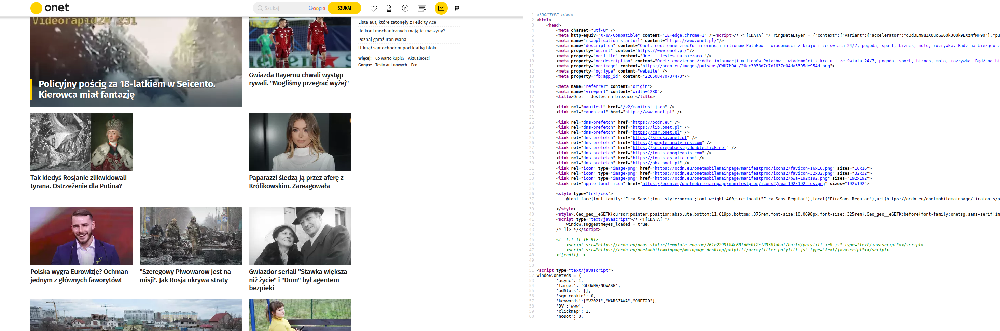
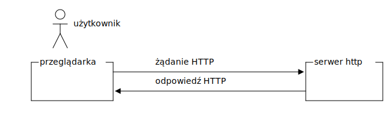
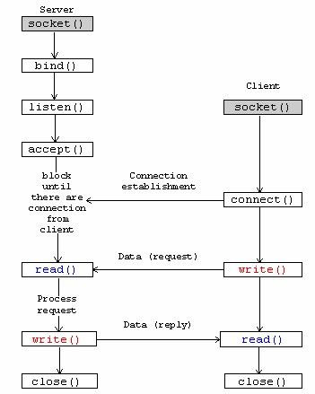

Zagadnienie 4: Komunikacja sieciowa
Protokół HTTP
Każda strona internetowa to dokument hipertekstowy

Hipertekstowy język znaczników (HTML)
Język HTML, służy do formułowania dokumentów hipertekstowych, które następnie są prezentowane przez przeglądarke jako strona internetowa.
Hipertekstowy język znaczników - efekt
Po wyrenderowaniu HTML, przez przeglądarke otrzymujemy następujący efekt:

Protokół przesyłania dokumentów hipertekstowych (HTTP)
Do przesyłania dokumentów HTML poprzez sieć służy protokół HTTP. Gdy użytkownik chce wejśc na daną stronę internetową, to przeglądarka wysyła żądanie HTTP do serwera HTTP. Następnie serwer odsyła przeglądarce odpowiedź.

Żądanie HTTP
Żądanie HTTP ma format tekstowy. Składa się z nagłówków zapytania oraz opcjonalnego ciała
METODA ZASÓB WERSJA_HTTP
Nagłówek1: Wartość1
Nagłówek2: Wartość2
<opcjonalne ciało>
Przykład:
GET /index.html HTTP/1.1
Host: example.com
User-Agent: Mozilla/5.0 (X11; Ubuntu; Linux x86_64; rv:98.0) Gecko/20100101 Firefox/98.0
Accept: */*
W HTTP/1.1 wymaganym nagłówkiem jest Host, reszta jest opcjonalna.
Odpowiedź HTTP
Odpowiedź HTTP ma format tekstowy. Składa się z linii statusu, nagłówków zapytania oraz opcjonalnego ciała:
HTTP/1.1 KOD_ODPOWIEDZI NAZWA_KODU
Nagłówek1: Wartość1
Nagłówek2: Wartość2
<opcjonalne ciało>
Odpowiedź HTTP - przykład
Przykładowa odpowiedź HTTP
HTTP/1.1 200 OK
Content-Type: text/html; charset=UTF-8
Date: Thu, 07 Apr 2022 15:32:42 GMT
Content-Length: 353
<!doctype html>
<html lang="pl">
<head>
<meta charset="utf-8">
<meta http-equiv="X-UA-Compatible" content="IE=edge">
<meta name="viewport" content="width=device-width, initial-scale=1">
<title>Title</title>
</head>
<body>
<h1>Witaj świecie</h1>
<p>Oto pierwszy akapit</p>
</body>
</html>
Gniazda sieciowe POSIX
Komunikacja klienta z serwerem

Funkcje/wywołania systemowe po stronie klienta
Po stronie klienta:
getaddrinfo()socket()connect()read()write()close()
Funkcja getaddrinfo()
Funkcja getaddrinfo() służy do odpytywania usługi DNS.
Otrzymany wynik należy “zwolnić” za pomocą freeaddrinfo()
Funkcja getaddrinfo() przykład
struct addrinfo hints = {
.ai_family = AF_INET,
.ai_socktype = SOCK_STREAM,
.ai_protocol = IPPROTO_TCP,
};
struct addrinfo *result = NULL;
int ret = getaddrinfo("onet.pl", "80", &hints, &result);
if (ret) {
/* Nie udało się przetłumaczyć nazwy */
}
/* Iterujemy się po każdyn znalezionym adresie */
for (struct addrinfo *i = result; i != NULL; i = i->ai_next) {
char ip[NI_MAXHOST] = {0};
/* i->ai_addr i i->ai_addrlen zawierają adres ip */
getnameinfo(i->ai_addr, i->ai_addrlen, ip, sizeof(ip), NULL, 0, NI_NUMERICHOST);
printf("IP serwisu onet.pl: %s\n", ip);
}
freeaddrinfo(result);
Wywołanie systemowe socket()
Wywołanie systemowe socket() otwiera gniazdo sieciowe, za pomocą którego możemy komunikować się poprzez sieć.
Na przykład możemy utrzowyć gniazdo TCP:
Wywołanie systemowe close()
Wywołanie systemowe close() zamyka gniazdo sieciowe.
Przykład:
close(fd);
Wywołanie systemowe connect()
Wywołanie systemowe connect() nawiązuje połączenie
Można wykorzystać pola ai_addr i ai_addrlen ze struktury struct addrinfo, otrzymanej z getaddrinfo(). Przykład:
Wywołanie systemowe read()
Dane z gniazda sieciowego odczytujemy podobnie jak dane z pliku:
Przykład - odczytanie z gniazda do 32 bajtów:
Wywołanie systemowe write()
Wysyłanie danych przez gniazdo sieciowe odbywa się podobnie jak zapisywanie danych do pliku.
Przykład - wysłanie ciągu znaków "Hello world" przez sieć:
Prosty klient HTTP
Zacznijmy od napisania funkcji która zwróci gniazdo połączone z serwerem http.
int connected_socket(const char *addr, const char *port)
{
struct addrinfo hints = {
.ai_family = AF_INET,
.ai_socktype = SOCK_STREAM,
.ai_protocol = IPPROTO_TCP,
};
struct addrinfo *result;
int ret = getaddrinfo(addr, port, &hints, &result);
if (ret)
return -1;
int fd = -1;
for (struct addrinfo *i = result; i != NULL; i = i->ai_next) {
fd = socket(i->ai_family, i->ai_socktype, i->ai_protocol);
if (fd < 0)
continue;
ret = connect(fd, i->ai_addr, i->ai_addrlen);
if (ret) {
close(fd);
fd = -1;
continue;
}
break;
}
freeaddrinfo(res);
return fd;
}
Prosty klient HTTP - żądanie i odpowiedź
Prosty klient HTTP - efekt
$ ./a.out
HTTP/1.1 200 OK
Accept-Ranges: bytes
Age: 482357
Cache-Control: max-age=604800
Content-Type: text/html; charset=UTF-8
Date: Thu, 07 Apr 2022 19:42:28 GMT
Etag: "3147526947"
Expires: Thu, 14 Apr 2022 19:42:28 GMT
Last-Modified: Thu, 17 Oct 2019 07:18:26 GMT
Server: ECS (nyb/1D1B)
Vary: Accept-Encoding
X-Cache: HIT
Content-Length: 1256
Connection: close
<!doctype html>
<html>
<head>
<title>Example Domain</title>
...
Funkcje/wywołania systemowe po stronie serwera
Po stronie serwera, używany jest następujący zestaw funkcji:
getaddrinfo()socket()bind()listen()accept()read()write()close()
Wywołanie systemowe bind()
Wywołanie systemowe bind() przypisuje adres do gniazda sieciowego.
Można wykorzystać pola ai_addr i ai_addrlen ze struktury struct addrinfo, otrzymanej z getaddrinfo(). Przykład:
Funkcja getaddrinfo() - adres do nasłuchiwania
Żeby funkcja getaddrinfo() zwróciła nam adres na którym możemy nasłuchiwać połączeń przychodzących, musimy użyc flagi AI_PASSIVE:
Tworzenie nasłuchującego gniazda
Wywołanie systemowe listen()
Wywołanie systemowe listen() przełącza socket w tryb nasłuchiwania.
Przykładowe wywołanie:
Wywołanie systemowe accept()
Wywołanie systemowe accept() blokuje program do momentu połączenia się klienta. Po nawiązaniu połączenia z klientem, accept() odblokowywuje program i zwraca gniazdo sieciowe służące do komunikacji z klientem.
Przykład: